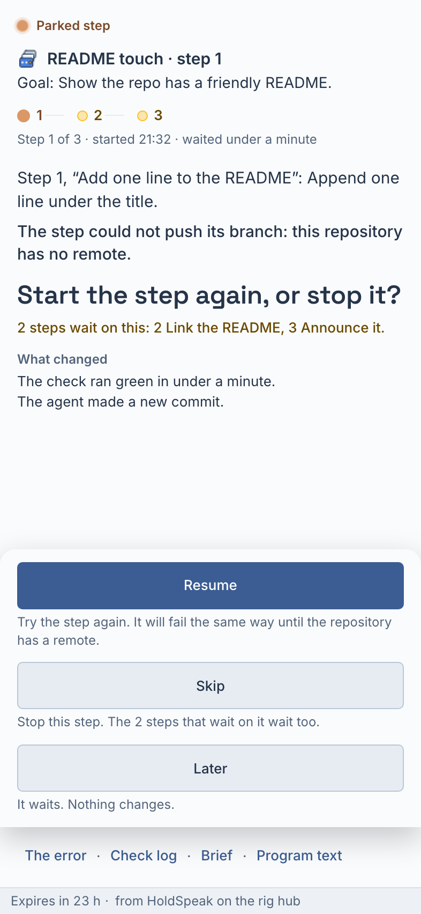
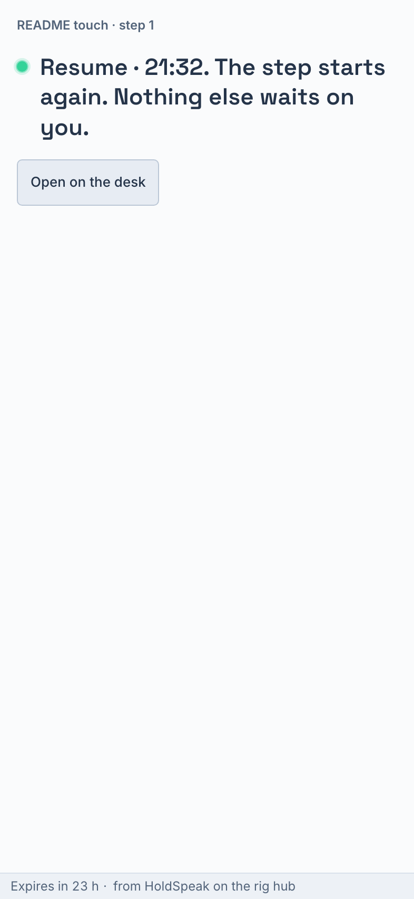
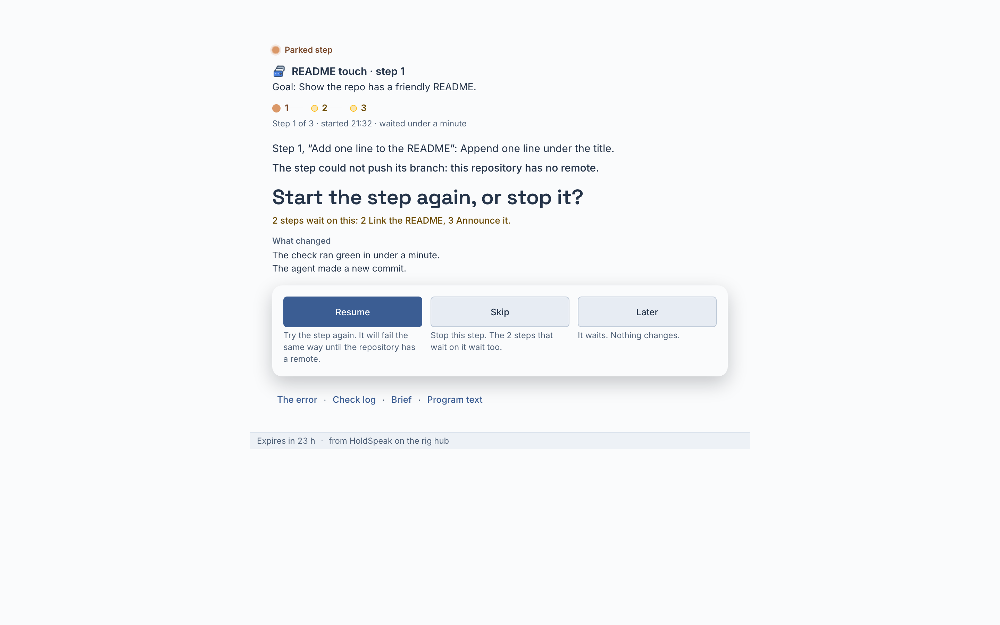
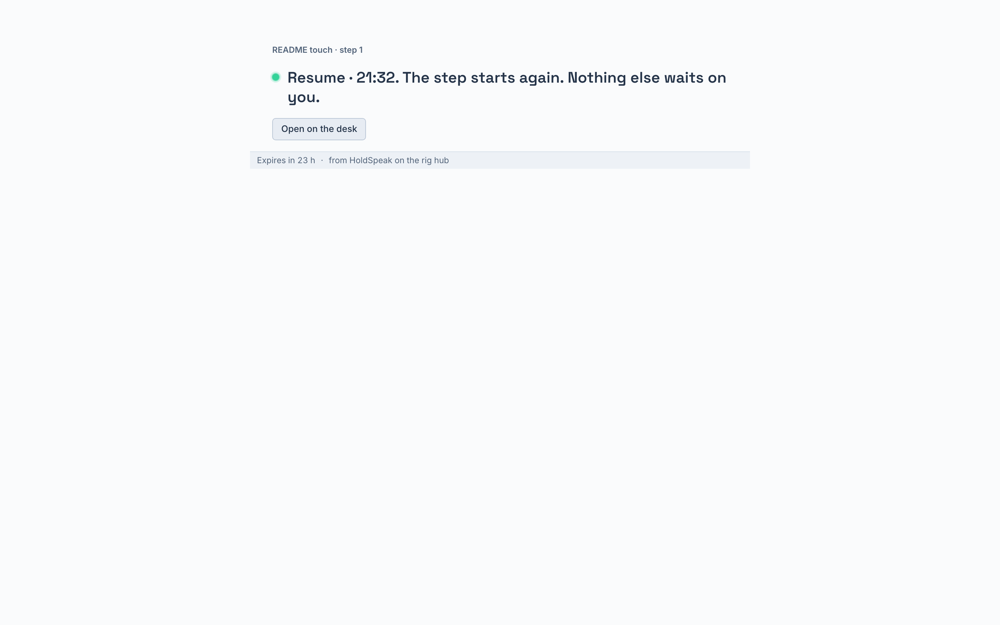

The briefing page, in his terms
Owner, 2026-10-31, on his phone, on the first real page: "I saw this briefing. And to be honest? It didn't even make sense to me. I didn't get enough context plus I felt like I answered, so why is there more…?" Then: "That left chevron something: fuck off. Invent something a lot clearer." Then: "Like, a visual of where in the program we are? What is being blocked by this answer, and so on? What happened with our paradigm of delighting the user fully…?"
The words are fixed by the BRIEF RULE (holdspeak/services/brief_words.py): the goal, the step, what happened in plain words, the question in one sentence, each choice with its consequence in his terms; the raw error, the log, the brief and the text behind one line of words; after the press, one line. This canvas picks where the step line and the blocked steps sit. Both directions: nothing boxed, the choices the only raised thing, no chevron, the step line is the Programs station track (web/src/desk/surface/programTrack.tsx), this step's lamp breathes, the steps that wait on it light once on load.
Recommendation: A, where we are, then the question. It reads in the order of the rule, the order a chief of staff speaks: the program and its goal, the step line with this step lit and the two steps that wait on it lit, then what the step was doing, what happened, and the question as the headline with "2 steps wait on this" right under it. The tray sits at the bottom in thumb reach. At 393 a single item fits one screen (measured on the build: scroll height 852 = the viewport).
B puts the question first and the step line in the footer under the choices. The question is sooner, but the "why" (the goal, where the step is) comes after the press, and the blocked steps are far from the question they hang on.
A · where we are, then the question, at 393 Recommended
Before the press
Parked step
README touch · step 1
Goal: Show the repo has a friendly README.
- 1
- 2
- 3
Step 1 of 3 · started 17:59 · waited 1 h 20
Step 1, “Add one line to the README”: Append one line under the title.
The step could not push its branch: this repository has no remote.
Start the step again, or stop it?
2 steps wait on this: 2 Link the README, 3 Announce it.
What changed
The check ran green in under a minute.
The agent made a new commit.
After Resume: one line
README touch · step 1
Resume · 18:18. The step starts again. Nothing else waits on you.
As built (the rig, 393)

As built, after

A at 1440
The same sheet, 720 px wide on the paper; the tray is a raised strip right under the brief with the choices in a row.
Parked step
README touch · step 1
Goal: Show the repo has a friendly README.
- 1
- 2
- 3
Step 1 of 3 · started 17:59 · waited 1 h 20
Step 1, “Add one line to the README”: Append one line under the title.
The step could not push its branch: this repository has no remote.
Start the step again, or stop it?
2 steps wait on this: 2 Link the README, 3 Announce it.
As built, before and after (1440)


B · the question first, the step line as the footer, at 393 Direction
Before the press
Parked step · README touch · step 1
Start the step again, or stop it?
The step could not push its branch: this repository has no remote.
Step 1, “Add one line to the README”: Append one line under the title.
Goal: Show the repo has a friendly README.
- 1
- 2
- 3
2 steps wait on this: 2 Link the README, 3 Announce it.
After Resume (the same one line as A)
README touch · step 1
Resume · 18:18. The step starts again. Nothing else waits on you.
Delight, in our system
The kind word's lamp and this step's dot breathe (kit-lamp-live, 2.4 s). The steps that wait on this one light once on load, 300 ms after the first paint, one after the other. The brief fades up under nothing, 160 ms. The choice tray is the only thing with depth (--depth-card). After the press the ok lamp pulses once (kit-lamp-pulse, 600 ms) beside the one line. All motion stops under reduced motion.
Could not establish: a Program kind hue. The tokens have --kind-project, --kind-pr, --kind-agent and five more, and no --kind-program; the page uses the Program sprite as the seat and the Your turn ember for the lamp, and adds no new hue.